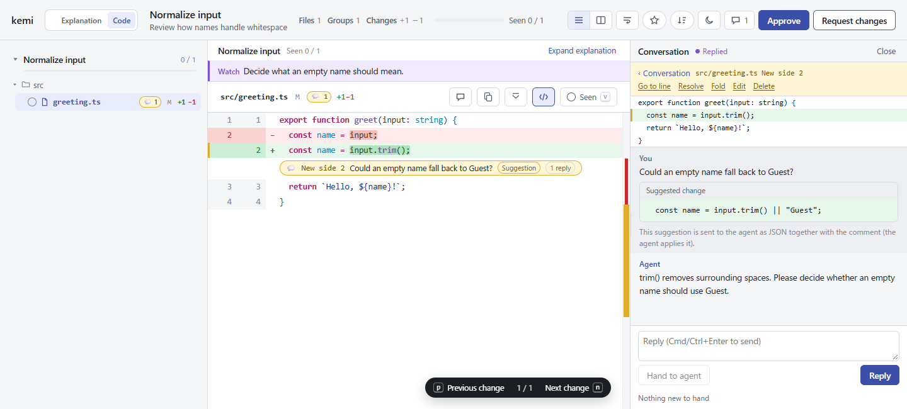

FOR THE HUMAN IN THE LOOP
Read the change.
Share your intent.
Read why the change was made.
Ask the agent while the review stays open.
Decide when you are ready.
kemi is a review tool that runs locally.
Get started with kemi
Read. Ask.
Then decide.
A place to think and communicate,
between terminal and browser.
- 01
Read the explanation
With an agent, start with an Explanation: what changed, why, and what needs your judgment. Follow its links to the code. You can also open a diff directly.
kemi --from main --explanation why.json - 02
Ask before deciding
Comment on the explanation or a line. Press Hand to agent to send your feedback after the agent connects with kemi wait. Replies appear in Conversation; the review stays open.
Explanation + Conversation - 03
Return your decision
Press Approve or Request changes when you are ready. Your decision, comments, suggestions, and conversation return to the starting terminal as one JSON document.
Standard output → agent
{ } See the JSON an agent receives Sample excerpt
This version-4 excerpt shows a file comment, a suggestion, and an agent reply. The complete result also records explanation comments and notes on the review. kemi never applies suggestions.
{
"kemi": 4,
"title": "Normalize input",
"verdict": "changes_requested",
"approval": [],
"comments": [
{
"target_type": "file",
"path": "src/greeting.ts",
"side": "new",
"start_line": 2,
"end_line": 2,
"body": "Could an empty name fall back to Guest?",
"suggestion": {
"replacement": " const name = input.trim() || \"Guest\";"
},
"replies": [
{
"author": "agent",
"body": "trim() removes surrounding spaces. Please decide whether an empty name should use Guest.",
"parts": null
}
]
}
]
}Give the change
your attention.
The views you need, close at hand.
The judgment stays with you.
- Understand the reason. Inspect the code.
- Read and comment on an Explanation before the diff. Follow its Code links, then switch a commit range between final form and per-commit views to inspect the history.
- Read documents. Review a running page.
- Markdown, CSV / TSV, and images have rendered views. With kemi --live, inspect a local running page at different widths, compare snapshots, and comment with Element, Arrow, or Pen.
- Read locally. Return suggestions.
- kemi listens on loopback by default. It never edits your files; suggested changes are returned as JSON.
Try kemi on
your next change.
The name comes from the Japanese “kemi suru”: to review.
Start by opening a diff in your own repository.
Japanese usage guide ↗
mise use -g github:ba0918/kemikemi --worktreemacOS · Linux · Windows ／ x86_64 & arm64
Install from a ZIP on Windows
Download kemi-<target>.zip for your CPU from the latest GitHub Release. Extract kemi.exe and add it to your PATH. Git must also be on your PATH.